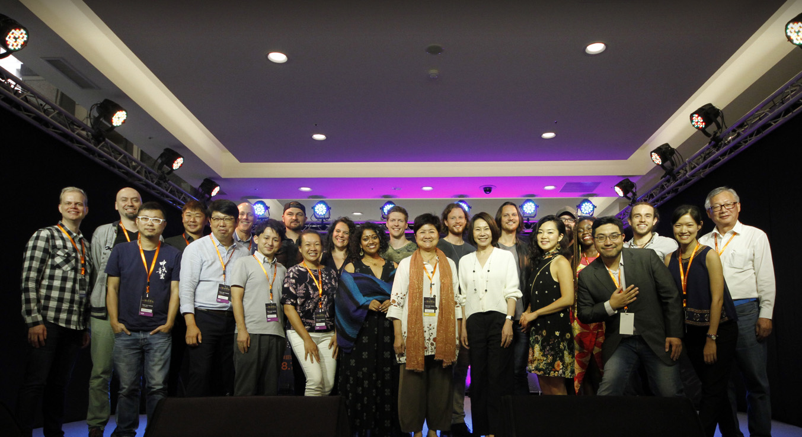

基金會常態計畫Vocal Asia
Vocal Asia 於2010年底成立，是目前全世界僅見的阿卡貝拉純人聲音樂跨國性整合平台，以台灣為基地，整合日本、韓國、港澳、新加坡、東南亞，以及中國大陸等地區的阿卡貝拉團體、歌手、創作者以及音樂、表演、資訊與知識，期望發揮綜效至阿卡貝拉藝術推廣、教育、市場發展乃至於慈善事業上。
阿卡貝拉音樂的本質是和諧、人性、關懷與聆聽，而 Vocal Asia 做的一切努力與目標都以此為出發點。 Sing to the World, The Voice of Asia 是 Vocal Asia 的宗旨，整合亞洲之聲是我們的任務，我們希望能夠使阿卡貝拉音樂將成為亞洲藝術領域中不容忽視的藝種與新興文創市場的亮點，讓純粹美好的人聲唱響全亞洲，擴及全世界!
基金會常態計畫樂 計 畫
「樂計畫」始自一個交響樂團與搖滾樂團交朋友的故事。
2017年元旦，「NSO國家交響樂團」與「蘇打綠搖滾樂團」，為了一個共同
的夢想，開始了一個音樂播種計畫，目的，不是使人人都成為音樂家，而是期盼
培育出喜愛音樂的種苗，讓愛樂者遍地開花。
「樂計畫」的耕地不分城市偏鄉；準備的種子為「阿卡貝拉」
「古典樂」與「爵士樂」；耕耘方式從推廣的「城鄉巡演」到
紮根的「師資培育」，我們盼望愛樂之苗
能在轉身之際發芽開花，而計畫需「以行動落實、以參與永續」
惟有不間斷的耕耘累積才能扎實生根，邀請您，與我們一起成為愛樂的農夫
共同散播音樂的美好、創造美好的音樂！